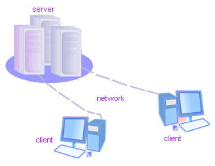
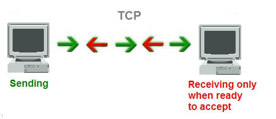
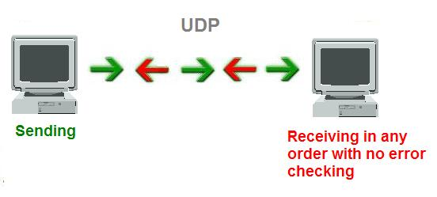
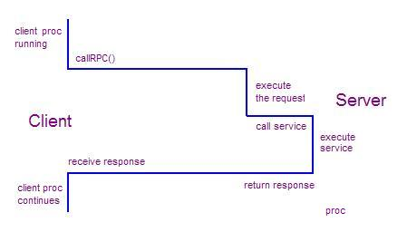

Introduction to Distributed System Design
Table of Contents
Audience and Pre-Requisites
This tutorial covers the basics of distributed systems design. The pre-requisites are significant programming experience
with a language such as C++ or Java, a basic understanding of networking, and data structures & algorithms.
The Basics
What is a distributed system? It's one of those things that's hard to define without
first defining many other things. Here is a "cascading" definition of a
distributed system:
- A program
- is the code you write.
- A process
- is what you get when you run it.
- A message
- is used to communicate between processes.
- A packet
- is a fragment of a message that might travel on a wire.
- A protocol
- is a formal description of message formats and the rules that two
processes must follow in order to exchange those messages.
- A network
- is the infrastructure that links computers, workstations, terminals,
servers, etc. It consists of routers which are connected by communication
links.
- A component
- can be a process or any piece of hardware required to run a process,
support communications between processes, store data, etc.
- A distributed system
- is an application that executes a collection of protocols to coordinate
the actions of multiple processes on a network, such that all components
cooperate together to perform a single or small set of related tasks.
Why build a distributed system? There are lots of advantages including the
ability to connect remote users with remote resources in an open and scalable
way. When we say open, we mean each component is continually open to
interaction with other components. When we say scalable, we mean the system
can easily be altered to accommodate changes in the number of users, resources
and computing entities.
Thus, a distributed system can be much larger and more
powerful given the combined capabilities of the distributed components, than
combinations of stand-alone systems. But it's not easy - for a distributed
system to be useful, it must be reliable. This is a difficult goal to achieve
because of the complexity of the interactions between simultaneously running
components.
To be truly reliable, a
distributed system must have the following characteristics:
- Fault-Tolerant: It can recover from component failures without performing
incorrect actions.
- Highly Available: It can restore operations, permitting it to resume
providing services even when some components have failed.
- Recoverable: Failed components can restart themselves and rejoin the
system, after the cause of failure has been repaired.
- Consistent: The system can coordinate actions by multiple components often
in the presence of concurrency and failure. This underlies the ability of a
distributed system to act like a non-distributed system.
- Scalable: It can operate correctly even as some aspect of the system is
scaled to a larger size. For example, we might increase the size of the
network on which the system is running. This increases the frequency of
network outages and could degrade a "non-scalable" system. Similarly, we might
increase the number of users or servers, or overall load on the system. In a
scalable system, this should not have a significant effect.
- Predictable Performance: The ability to provide desired responsiveness in
a timely manner.
- Secure: The system authenticates access to data and services [1]
These are high standards, which are challenging to achieve. Probably
the most difficult challenge is a distributed system must be able to continue
operating correctly even when components fail. This issue is discussed in the
following excerpt of an interview with Ken Arnold. Ken is a research scientist
at Sun and is one of the original architects of Jini, and was a member of the
architectural team that designed CORBA.
Failure is the defining difference between distributed and
local programming, so you have to design distributed systems with the
expectation of failure. Imagine asking people, "If the probability of something
happening is one in 1013, how often would it happen?" Common sense
would be to answer, "Never." That is an infinitely large number in human terms.
But if you ask a physicist, she would say, "All the time. In a cubic foot of
air, those things happen all the time."
When you design distributed systems, you
have to say, "Failure happens all the time." So when you design, you design for
failure. It is your number one concern. What does designing for failure mean?
One classic problem is partial failure. If I send a message to you and then a
network failure occurs, there are two possible outcomes. One is that the message
got to you, and then the network broke, and I just didn't get the response. The
other is the message never got to you because the network broke before it
arrived.
So if I never receive a response, how do I know which of those two
results happened? I cannot determine that without eventually finding you. The
network has to be repaired or you have to come up, because maybe what happened
was not a network failure but you died. How does this change how I design
things? For one thing, it puts a multiplier on the value of simplicity. The more
things I can do with you, the more things I have to think about recovering from.
[2]
Handling failures is an important theme in distributed systems design. Failures
fall into two obvious categories: hardware and software. Hardware failures were
a dominant concern until the late 80's, but since then internal hardware
reliability has improved enormously. Decreased heat production and power
consumption of smaller circuits, reduction of off-chip connections and wiring,
and high-quality manufacturing techniques have all played a positive role in
improving hardware reliability.
Today, problems are most often associated with
connections and mechanical devices, i.e., network failures and drive failures.
Software failures are a significant issue in distributed systems. Even with
rigorous testing, software bugs account for a substantial fraction of unplanned
downtime (estimated at 25-35%). Residual bugs in mature systems can be
classified into two main categories [5].
- Heisenbug: A bug that seems to disappear or alter its characteristics when
it is observed or researched. A common example is a bug that occurs in a
release-mode compile of a program, but not when researched under debug-mode.
The name "heisenbug" is a pun on the "Heisenberg uncertainty principle," a
quantum physics term which is commonly (yet inaccurately) used to refer to the
way in which observers affect the measurements of the things that they are
observing, by the act of observing alone (this is actually the observer
effect, and is commonly confused with the Heisenberg uncertainty principle).
- Bohrbug: A bug (named after the Bohr atom model) that, in contrast to a
heisenbug, does not disappear or alter its characteristics when it is
researched. A Bohrbug typically manifests itself reliably under a well-defined
set of conditions. [6]
Heisenbugs tend to be more prevalent in
distributed systems than in local systems. One reason for this is the difficulty
programmers have in obtaining a coherent and comprehensive view of the
interactions of concurrent processes.
Let's get a little more specific about the types of failures that can occur
in a distributed system:
- Halting failures: A component simply stops. There is no way to
detect the failure except by timeout: it either stops sending "I'm
alive" (heartbeat) messages or fails to respond to requests. Your
computer freezing is a halting failure.
- Fail-stop: A halting failure with some kind of notification to other
components. A network file server telling its clients it is about to go
down is a fail-stop.
- Omission failures: Failure to send/receive messages primarily due to
lack of buffering space, which causes a message to be discarded with no
notification to either the sender or receiver. This can happen when
routers become overloaded.
- Network failures: A network link breaks.
- Network partition failure: A network fragments into two or more
disjoint sub-networks within which messages can be sent, but between
which messages are lost. This can occur due to a network failure.
- Timing failures: A temporal property of the system is violated. For
example, clocks on different computers which are used to coordinate
processes are not synchronized; when a message is delayed longer than a
threshold period, etc.
- Byzantine failures: This captures several types of faulty behaviors
including data corruption or loss, failures caused by malicious
programs, etc. [1]
Our goal is to design a distributed system with the characteristics
listed above (fault-tolerant, highly available, recoverable, etc.), which
means we must design for failure. To design for failure, we must be
careful to not make any assumptions about the reliability of the
components of a system.
Everyone, when they first build a distributed system, makes the following
eight assumptions. These are so well-known in this field that they are commonly
referred to as the "8 Fallacies".
- The network is reliable.
- Latency is zero.
- Bandwidth is infinite.
- The network is secure.
- Topology doesn't change.
- There is one administrator.
- Transport cost is zero.
- The network is homogeneous. [3]
Latency: the time between initiating a request for data
and the beginning of the actual data transfer.
Bandwidth: A measure of the
capacity of a communications channel. The higher a channel's bandwidth, the more
information it can carry.
Topology: The different configurations that can
be adopted in building networks, such as a ring, bus, star or
meshed.
Homogeneous network: A network running a single network protocol.
So How Is It Done?
Building a reliable system that runs over an
unreliable communications network seems like an impossible goal. We are forced
to deal with uncertainty. A process knows its own state, and it knows what state
other processes were in recently. But the processes have no way of knowing each
other's current state. They lack the equivalent of shared memory. They also lack
accurate ways to detect failure, or to distinguish a local software/hardware
failure from a communication failure.
Distributed systems design is obviously a
challenging endeavor. How do we do it when we are not allowed to assume
anything, and there are so many complexities? We start by limiting the scope. We
will focus on a particular type of distributed systems design, one that
uses a client-server model with mostly standard protocols. It turns
out that these standard protocols provide considerable help with the low-level
details of reliable network communications, which makes our job easier. Let's
start by reviewing client-server technology and the protocols.
|  |
In client-server applications, the server provides some service,
such as processing database queries or sending out current stock prices.
The client uses the service provided by the server, either displaying
database query results to the user or making stock purchase
recommendations to an investor. The communication that occurs between the
client and the server must be reliable. That is, no data can be dropped
and it must arrive on the client side in the same order in which the
server sent it.
There are many types of servers we encounter in a distributed system.
For example, file servers manage disk storage units on which file
systems reside. Database servers house databases and make them available
to clients. Network name servers implement a mapping between a symbolic
name or a service description and a value such as an IP address and port
number for a process that provides the service. |
In distributed systems, there can be many servers of a particular type, e.g.,
multiple file servers or multiple network name servers. The term service is
used to denote a set of servers of a particular type. We say that a binding
occurs when a process that needs to access a service becomes associated with a
particular server which provides the service. There are many binding policies
that define how a particular server is chosen. For example, the policy could be
based on locality (a Unix NIS client starts by looking first for a server on its
own machine); or it could be based on load balance (a CICS client is bound in
such a way that uniform responsiveness for all clients is attempted).
A distributed service may employ data replication, where a service
maintains multiple copies of data to permit local access at multiple locations,
or to increase availability when a server process may have crashed. Caching is
a related concept and very common in distributed systems. We say a process has
cached data if it maintains a copy of the data locally, for quick access if it
is needed again. A cache hit is when a request is satisfied from cached data,
rather than from the primary service. For example, browsers use document caching
to speed up access to frequently used documents.
Caching is similar to replication, but cached data can become stale. Thus,
there may need to be a policy for validating a cached data item before using it.
If a cache is actively refreshed by the primary service, caching is identical to
replication. [1]
As mentioned earlier, the communication between client and server needs to be
reliable. You have probably heard of TCP/IP before. The Internet Protocol (IP)
suite is the set of communication protocols that allow for communication on the
Internet and most commercial networks. The Transmission Control Protocol (TCP)
is one of the core protocols of this suite. Using TCP, clients and servers can
create connections to one another, over which they can exchange data in packets.
The protocol guarantees reliable and in-order delivery of data from sender to
receiver.
The IP suite can be viewed as a set of layers, each layer having the property
that it only uses the functions of the layer below, and only exports
functionality to the layer above. A system that implements protocol behavior
consisting of layers is known as a protocol stack. Protocol stacks can be
implemented either in hardware or software, or a mixture of both. Typically,
only the lower layers are implemented in hardware, with the higher layers being
implemented in software.
Resource : The history of TCP/IP mirrors the evolution of the Internet.
Here is
a brief overview of this history.
There are four layers in the IP suite:
- Application Layer : The application layer is used by most programs
that require network communication. Data is passed down from the program in an
application-specific format to the next layer, then encapsulated into a
transport layer protocol. Examples of applications are HTTP, FTP or Telnet.
- Transport Layer : The transport layer's responsibilities include
end-to-end message transfer independent of the underlying network, along with
error control, fragmentation and flow control. End-to-end message transmission
at the transport layer can be categorized as either connection-oriented
(TCP) or connectionless (UDP). TCP is the more sophisticated of the two
protocols, providing reliable delivery. First, TCP ensures that the receiving
computer is ready to accept data. It uses a three-packet handshake in which
both the sender and receiver agree that they are ready to communicate. Second,
TCP makes sure that data gets to its destination. If the receiver doesn't
acknowledge a particular packet, TCP automatically retransmits the packet
typically three times. If necessary, TCP can also split large packets into
smaller ones so that data can travel reliably between source and destination.
TCP drops duplicate packets and rearranges packets that arrive out of
sequence.

UDP is
similar to TCP in that it is a protocol for sending and receiving packets
across a network, but with two major differences. First, it is connectionless.
This means that one program can send off a load of packets to another, but
that's the end of their relationship. The second might send some back to the
first and the first might send some more, but there's never a solid
connection. UDP is also different from TCP in that it doesn't provide any sort
of guarantee that the receiver will receive the packets that are sent in the
right order. All that is guaranteed is the packet's contents. This means it's
a lot faster, because there's no extra overhead for error-checking above the
packet level. For this reason, games often use this protocol. In a game, if
one packet for updating a screen position goes missing, the player will just
jerk a little. The other packets will simply update the position, and the
missing packet - although making the movement a little rougher - won't change
anything.

Although TCP
is more reliable than UDP, the protocol is still at risk of failing in many
ways. TCP uses acknowledgements and retransmission to detect and repair loss.
But it cannot overcome longer communication outages that disconnect the sender
and receiver for long enough to defeat the retransmission strategy. The normal
maximum disconnection time is between 30 and 90 seconds. TCP could signal a
failure and give up when both end-points are fine. This is just one example of
how TCP can fail, even though it does provide some mitigating strategies.
- Network Layer : As originally defined, the Network layer solves the
problem of getting packets across a single network. With the advent of the
concept of internetworking, additional functionality was added to this layer,
namely getting data from a source network to a destination network. This
generally involves routing the packet across a network of networks, e.g. the
Internet. IP performs the basic task of getting packets of data from source to
destination.
- Link Layer : The link layer deals with the physical transmission of
data, and usually involves placing frame headers and trailers on packets for
travelling over the physical network and dealing with physical components
along the way.
Resource : For more information on the IP Suite, refer to the
Wikipedia
article.
Many distributed systems were built using TCP/IP as the foundation for the communication between components.
Over time, an efficient method for clients to interact with servers evolved called RPC, which means remote procedure call.
It is a powerful technique based on extending the notion of local procedure
calling, so that the called procedure may not exist in the same address space as the calling procedure. The two processes
may be on the same system, or they may be on different systems with a network connecting them.
An RPC is similar to a function call. Like a
function call, when an RPC is made, the arguments are passed to the
remote procedure
and the caller waits for a response to be returned. In the illustration
below, the client makes a procedure call that sends a request
to the server. The client process waits until either a reply is
received, or it times out. When the request arrives at the server, it
calls a dispatch routine that performs the requested service, and sends
the reply to the client. After the RPC call is completed, the client
process continues.

Threads are common in RPC-based distributed systems. Each incoming request to a server typically spawns a new thread.
A thread in the client typically issues an RPC and then blocks (waits). When the reply is received, the client thread resumes
execution.
A programmer writing RPC-based code does three things:
- Specifies the protocol for client-server communication
- Develops the client program
- Develops the server program
The communication protocol is created by stubs generated by a protocol compiler. A stub is a routine that
doesn't actually do much other than declare itself and the parameters it accepts. The stub contains just enough code
to allow it to be compiled and linked.
The client and server programs must communicate via the procedures and data types specified in the protocol.
The server side registers the procedures that may be called by the client and receives and returns data required for
processing. The client side calls the remote procedure, passes any required data and receives the returned data.
Thus, an RPC application uses classes generated by the stub generator to execute an
RPC and wait for it to finish. The programmer needs to supply classes on the server side that provide the logic
for handling an RPC request.
RPC introduces a set of error cases that are not present in local procedure programming. For example, a binding error
can occur when a server is not running when the client is started. Version mismatches occur if a client was compiled
against one version of a server, but the server has now been updated to a newer version. A timeout can result from a
server crash, network problem, or a problem on a client computer.
Some RPC applications view these types of errors as unrecoverable. Fault-tolerant systems, however, have alternate sources
for critical services and fail-over from a primary server to a backup server.
A challenging error-handling case occurs when a
client needs to know the outcome of a request in order to take the
next step, after failure of a server. This can sometimes result in
incorrect actions and results. For example, suppose
a client process requests a ticket-selling server to check for a seat
in the orchestra section of Carnegie Hall. If it's available,
the server records the request and the sale. But the request fails by
timing out. Was the seat available and the sale recorded?
Even if there is a backup server to which the request can be re-issued,
there is a risk that the client will be sold two tickets,
which is an expensive mistake in Carnegie Hall [1].
Here are some common error conditions that need to be handled:
Given what we have covered so far, we can define some fundamental design principles
which every distributed system designer and software engineer should know. Some of these
may seem obvious, but it will be helpful as we proceed to have a good starting list.
- As Ken Arnold says: "You have to design distributed systems with the expectation of failure." Avoid making
assumptions that any component in the system is in a particular state. A classic error scenario is for a process to
send data to a process running on a second machine. The process on the first machine receives some data back
and processes it, and then sends the results back to the second machine assuming it is ready to receive. Any
number of things could have failed in the interim and the sending process must anticipate these possible failures.
- Explicitly define failure scenarios and identify how likely each one might occur. Make sure your code is
thoroughly covered for the most likely ones.
- Both clients and servers must be able to deal with unresponsive senders/receivers.
- Think carefully about how much data you send over the network. Minimize traffic as much as possible.
- Latency is the time between initiating a request for data and the beginning of the actual data transfer.
Minimizing latency sometimes comes down to a question of whether you should make many little calls/data
transfers or one big call/data transfer. The way to make this decision is to experiment. Do small tests to
identify the best compromise.
- Don't assume that data sent across a network (or even sent from disk to disk in a rack) is the same
data when it arrives. If you must be sure, do checksums or validity checks on data to verify that the data
has not changed.
- Caches and replication strategies are methods for dealing with state across components. We try to
minimize stateful components in distributed systems, but it's challenging. State is something held in one
place on behalf of a process that is in another place, something that cannot be reconstructed by any other
component. If it can be reconstructed it's a cache. Caches can be helpful in mitigating the risks of maintaining
state across components. But cached data can become stale, so there may need to be a policy for validating a
cached data item before using it.
If a process stores information that can't be reconstructed, then problems arise. One possible question is,
"Are you now a single point of failure?" I have to talk to you now - I can't talk to anyone else. So
what happens if you go down? To deal with this issue, you could be replicated. Replication strategies are
also useful in mitigating the risks of maintaining state. But there are challenges here too: What if I talk to one
replicant and modify some data, then I talk to another? Is that modification guaranteed to have already arrived
at the other? What happens if the network gets partitioned and the replicants can't talk to each other? Can
anybody proceed?
There are a set of tradeoffs in deciding how and where to maintain state, and when to use caches and
replication. It's more difficult to run small tests in these scenarios because of the overhead in setting up
the different mechanisms.
- Be sensitive to speed and performance. Take time to determine which parts of your system can have
a significant impact on performance: Where are the bottlenecks and why? Devise small tests you can do to
evaluate alternatives. Profile and measure to learn more. Talk to your colleagues about these alternatives
and your results, and decide on the best solution.
- Acks are expensive and tend to be avoided in distributed systems wherever possible.
- Retransmission is costly. It's important to experiment so you can tune the delay that prompts a retransmission to be optimal.
- Have you ever encountered a Heisenbug? How did you isolate and fix it?
- For the different failure types listed above, consider what makes each one difficult
for a programmer trying to guard against it. What kinds of processing can be added
to a program to deal with these failures?
- Explain why each of the 8 fallacies is actually a fallacy.
- Contrast TCP and UDP. Under what circumstances would you choose one over the other?
- What's the difference between caching and data replication?
- What are stubs in an RPC implementation?
- What are some of the error conditions we need to guard against in a distributed environment that
we do not need to worry about in a local programming environment?
- Why are pointers (references) not usually passed as parameters to a Remote Procedure Call?
- Here is an interesting problem called partial connectivity that can occur in a distributed environment.
Let's say A and B are systems that need to talk to each other. C is a master that also talks to A and B individually.
The communications between A and B fail. C can tell that A and B are both healthy. C tells A to send something to
B and waits for this to occur. C has no way of knowing that A cannot talk to B, and thus waits and waits and waits.
What diagnostics can you add in your code to deal with this situation?
- What is the leader-election algorithm? How can it be used in a distributed system?
- This is the Byzantine Generals problem: Two generals are on hills either side of a valley. They each have an army
of 1000 soldiers. In the woods in the valley is an enemy army of 1500 men. If each general attacks alone, his army will
lose. If they attack together, they will win. They wish to send messengers through the valley to coordinate when to attack.
However, the messengers may get lost or caught in the woods (or brainwashed into delivering different messages). How
can they devise a scheme by which they either attack with high probability, or not at all?
[1] Birman, Kenneth. Reliable
Distributed Systems: Technologies, Web Services and Applications. New York:
Springer-Verlag, 2005.
[2] Interview
with Ken Arnold
[3] The
Eight Fallacies
[4] Wikipedia
article on IP Suite
[5] Gray, J. and Reuter, A. Transaction Processing:
Concepts and Techniques. San Mateo, CA: Morgan Kaufmann, 1993.
[6] Bohrbugs
and Heisenbugs